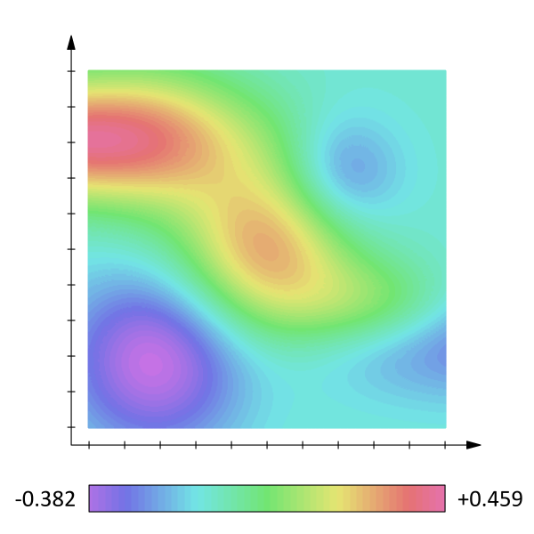
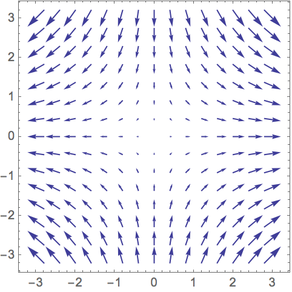

HOME BLOG EBOOKS ABOUT CONTACT SHOP
A field is a physical quantity that can be specified everywhere in space as a function of position (x, y and z coordinates). And there are basically 2 types of fields: Scalar and vector fields. A scalar field (or a scalar function) associates a scalar value or a magnitude to every point in space.
Example: Distribution of temperature in a room. If Temperature in a room is given by scalar field T= xy2z3, then at point (1,1,1) the temperature is 1 unit and at another point (2,3,1), the temperature is 18 units and so on

Note that it is not necessary for a scalar field to have non zero values at every point in space.
Similarly, a vector field (or a vector function) is a field in which a vector can be assigned to every point in space.
Example: Velocity of flow at different points in a fluid. If velocity of flow is given by , then at point (1,1,1) the velocity is denoted by the vector
. At another point (1,2,3), the velocity is
and so on.
